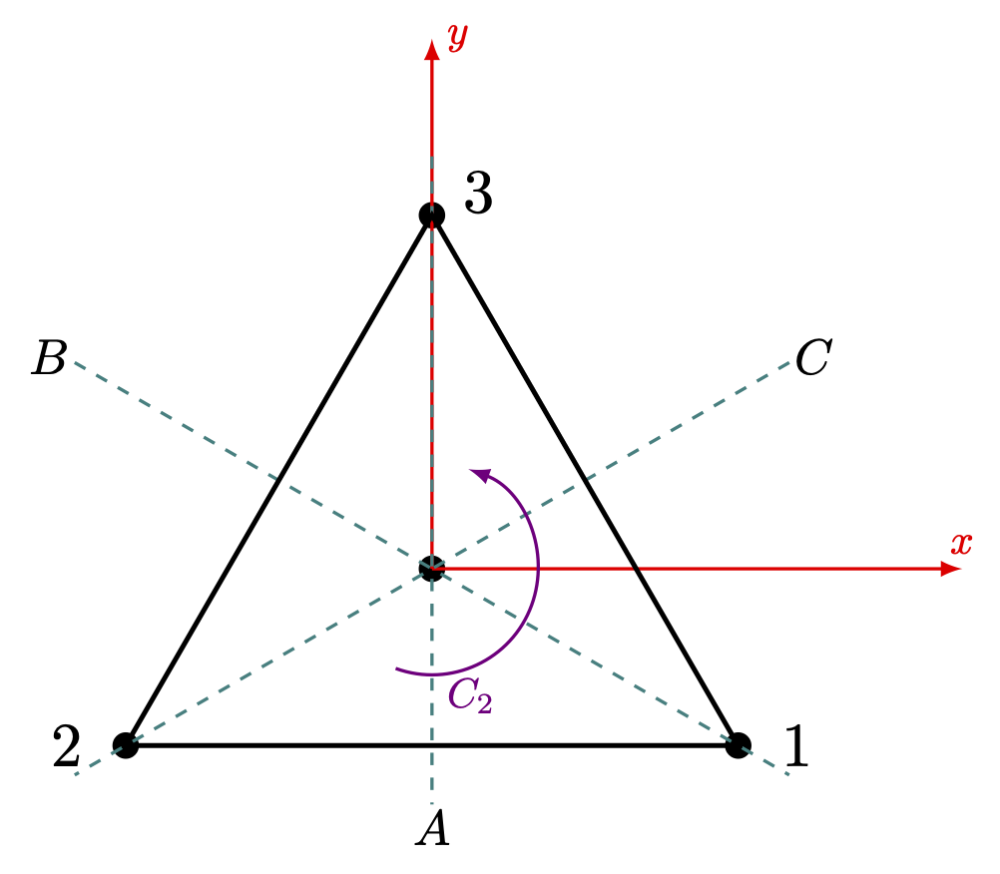

8 군과 양자역학 I- 대칭과 슈뢰딩거 방정식군
% %
%\[ \DeclarePairedDelimiters{\set}{\{}{\}} \DeclareMathOperator*{\argmax}{argmax} \]
8.1 대칭과 물리
8.1.1 슈뢰딩거 방정식과 degeneracy
해밀토니안 \(\hat{H} = \hat{T}+\hat{V}\) 인 양자역학 시스템을 생각하자 그리고 해밀토니안 \(\hat{H}\) 에 어떤 기하학적인 대칭이 존재한다고 하자. 운동 에너지 \(\hat{T}\) 는 회전과 병진에 대해 자체로 불변이기 때문이기 때문에 해밀토니안 \(\hat{H}\) 에 어떤 공간대칭성이 있다면 일반적으로 포텐셜 에너지 \(\hat{V}\) 의 대칭성이다. 비상대론적 양자역학은 슈뢰딩거 방정식에 의해 기술된다.
\[ i\hbar \dfrac{\partial \Psi}{\partial t} = \hat{H}\Psi. \tag{8.1}\]
양자역학에서 변환은 유니타리 연산자에 의해 표현되는 유니타리 변환이며 유니타리 변환 \(\hat{S}\) 에 대해 \(\hat{H}\) 가 불변이라는 것은 \(\hat{S}\hat{H}=\hat{H}\hat{S}\) 임을 의미한다. 그리고 이런 변환의 집합은 군을 이룬다는 것을 쉽게 보일 수 있다.
\(|\Psi_n\rangle\) 이 슈뢰딩거 방정식의 고유상태로 \(E_n\) 의 고유값을 갖는다고 하자. \(R\) 이 슈뢰딩거 방정식군에 포함된다면
\[ \hat{H}\hat{R}|\Psi_n \rangle = \hat{R}\hat{H} |\Psi_n \rangle = E_n \hat{R}|\Psi_n\rangle \]
이므로 \(\hat{R}|\Psi_n\rangle\) 역시 \(E_n\) 의 고유값을 갖는 슈뢰딩거 방정식의 고유상태이다. 즉 어떤 대칭성이 있을 때 degeneracy 가 발생한다.
예를 들어 수소 원자 스펙트럼에서 \(2s\) 와 \(2p\) 오비탈은 같은 에너지를 갖는 것으로 알려졌지만 이후 운동량 공간에서의 해밀토니안의 4차원 회전 대칭 때문임이 알려졌다\(^\dagger\). Accidental degeneracy 는 대칭성을 이용하여 이해 할 수 없기 때문에 앞으로 특별한 언급이 없는 한 모든 degeneracy 는 normal degeneracy 를 의미한다.
8.1.2 슈뢰딩거 방정식 군의 표현
여기서는 해밀토니안 \(\hat{H}\) 와 이 해밀토니안에 대한 슈뢰딩거 방정식 군 \(G_S\) 을 알 때 \(G_S\) 의 기약표현으로부터 해밀토니안의 가능한 degeneracy 를 알 수 있다는 것을 보이고자 한다.
우선 해밀토니안 \(\hat{H}\) 의 고유값 \(E_n\) 에 대해 \(d_n\)-fold normal degeneracy 가 존재한다고 하자. 이 \(d_n\) 차원 고유공간을 \(\mathcal{H}_n\) 이라고 하자. 그렇다면 \(d\) 개의 정규직교 고유상태 \(\{|\Gamma_n1\rangle,\ldots,|\Gamma_n d_n\rangle\}\) 가 존재한다. 여기서 \(\Gamma_n\) 은 \(\mathcal{H}_n\) 에 속한다는 것을 의미하며 그 뒤의 인덱스는 \(\mathcal{H}_n\) 내의 고유상태의 순서를 의미한다. \(\mathcal{H}_n\) 은\(G_S\) 군에 속하는 모든 변환에 대한 불변 공간이므로 임의의 \(S\in G_S\) 에 대해
\[ \hat{S}|\Gamma_n i\rangle = \sum_{j=1}^{d_n} D^{(\Gamma_n)}(S)_{ji} |\Gamma_n j\rangle \tag{8.2}\]
인 \(d_n\times d_n\) 행렬 \(D^{(\Gamma_n)}(S)\) 가 존재한다.
보조정리 8.1 식 8.2 의 \(D^{(\Gamma_n)}\) 는 \(G_S\) 에 대한 \(d_n\) 차원 유니타리 기약표현이다.
(증명). 우선 \(D^{(\Gamma_n)}\) 이 표현임을 보이자. 표기의 편의를 위해 잠시 \(D=D^{(\Gamma_n)}\) 이라고 놓자. \(R,\,S\in G_S\) 에 대해
\[ \begin{aligned} \hat{R}\hat{S}|\Gamma_n i\rangle &= \hat{R}\sum_j^{d_n} D(S)_{ji}|\Gamma_nj\rangle = \sum_k^{d_n}\sum_j^{d_n} D(S)_{ji}D(R)_{kj}|\Gamma_n k\rangle \\[0.3em] &= \sum_k^{d_n}\left[D(R)D(S)\right]_{ki}|\Gamma_nk\rangle \end{aligned} \]
이다. 즉 \(D(RS) = D(R)D(S)\) 이므로 \(D\) 은 \(G_S\) 에 대한 \(d_n\) 차원 표현이다.
이제 \(D\) 가 기약표현이 아님을 가정하자. \(D\) 가 모든 \(G_S\) 에 대해 블럭대각행렬이라면 어떤 \(|\Gamma_ni\rangle,\, |\Gamma_nj\rangle\) 이 존재하여 모든 \(R\in G_S\) 에 대해 \(\hat{R}|\Gamma_ni\rangle \ne |\Gamma_nj\rangle\) 이어야 한다. 그렇다면 여기에 accidental degeneracy 가 있는 것이며 normal degeneracy 라는 가정에 모순된다. 즉 \(D\) 는 기약표현이다.
이제 \(D\) 이 유니타리 임을 보이자. 임의의 \(R\in G_S\) 에 대해
\[ \begin{aligned} \delta_{ij} &= \langle \Gamma_n j|\Gamma_n i\rangle = \langle \Gamma_nj|\hat{R}^\dagger \hat{R}|\Gamma_ni\rangle = \sum_{k,m} \left(D(R)_{kj}\right)^\ast D(R)_{mi}\langle \Gamma_n k|\Gamma_n m\rangle \\[0.3em] &= \sum_{k,m} \left(D(R)_{kj}\right)^\ast D(R)_{mi}\delta_{km} = \sum_k (D(R))^\dagger_{jk}D(R)_{ki} = [D(R)^\dagger D(R)]_{ji} \end{aligned} \]
이므로 \(\left(D(R)\right)^{-1}=D(R)^\dagger\) 이다. 즉 \(D=D^{(\Gamma_n)}\) 은 \(d_n\) 차원 유니타리 기약표현이다. \(\square\)
이제 우리는 해밀토니안에 \(d_n\)-fold degeneracy 가 존재하면 슈뢰딩거 방정식 군에 대해 \(d_n\) 차원 기약표현이 존재한다는 것을 안다. 이제 반대로 슈뢰딩거 방정식 군에 \(d_n\) 차원 기약표현이 존재한다면 해밀토니안에 \(d_n\)-fold degeneracy 가 존재할까? 답은 그렇다 이다.
보조정리 8.2 슈뢰딩거 방정식 군 \(G_S\) 의 기약표현 \(\Gamma_n\) 과 그 차원 \(d_n\) 에 대해 \(d_n\)-fold normal degeneracy 가 존재한다.
(증명). \(D\) 가 \(G_S\) 에 대한 \(d_n\) 차원 기약표현이라고 하자. 모든 \(R\in G_S\) 에 대해 \(\hat{R}\hat{H}=\hat{H}\hat{R}\) 이며 따라서 \(\hat{H}D(T)= D(T)\hat{H}\) 이다. 슈어 보조정리(보조정리 6.2) 에 의해 \(\hat{H}\) 는 항등행렬의 상수배이므로 해밀토니안에는 \(d_n\)-fold degeneracy 가 존재한다. \(\square\)
우리는 보조정리 8.1 과 보조정리 8.2 로부터 다음의 결론을 내릴 수 있다.
정리 8.1 해밀토니안 \(\hat{H}\) 와 슈뢰딩거 방정식 군 \(G_S\) 를 생각하자. \(G_S\) 의 모든 기약표현의 차원을 알면 이 해밀토니안에서 가능한 normal degeneracy 를 알 수 있으며 그 역도 성립한다.
\(\mathcal{H}_n\) 의 기저를 앞서 주어진 \(\{|\Gamma_n i\rangle: i=1,\ldots,\,n\}\) 기저와는 다른 기저 \(\{|\psi_j\rangle : j=1,\ldots,\,d_n\}\) 로 선택했다고 하자. 그렇다면 어떤 \(d_n \times d_n\) 유니타리 행렬 \(U\) 에 대해
\[ |\psi_j\rangle = \sum_{i=1}^{d_n} U_{ij} |\Gamma_n i\rangle,\qquad |\Gamma_n i\rangle = \sum_{j=1}^{d_n} U^{-1}_{ji} |\psi_j\rangle \]
의 관계를 만족한다. 이 때
\[ \begin{aligned} \hat{R}|\psi_j\rangle &= \sum_{k=1}^{d_n}U_{ij} \hat{R}|\Gamma_n i\rangle = \sum_{k=1}^{d_n}U_{ij}D^{(\Gamma_n)}(R)_{ki}|\Gamma_n k\rangle \\ &=\sum_{k=1}^{d_n}\sum_{k=1}^{d_n} \sum_{l=1}^{d_n}U_{ij} D^{(\Gamma_n)}(R)_{ki} U^{-1}_{lk} |\psi_l\rangle \\[0.3em] &= \sum_{l=1}^{d_n} \left(U^\dagger D^{(\Gamma_n)}(R)U\right)_{lj}|\psi_l\rangle \end{aligned} \]
이다. 즉 기저의 유니타리 변환은 슈뢰딩거 방정식군에 대한 표현의 유니타리 변환이라는 것을 알 수 있다. 즉 다음과 같은 결론을 내릴 수 있다.
정리 8.2 해밀토니안의 각각의 고유값에 대해 슈뢰딩거 방정식 군의 기약표현은 (동등한 기약표현의 범위 내애서) 유일하다.
슈뢰딩거 방정식의 기저벡터를 에너지 고유값 \(E_n\) 에 대해 \(|E_n,\, j\rangle\) 로 기술하는 경우를 생각하자. 여기서 \(E_n\) 은 해밀토니안 연산자의 고유값이며 \(j\) 는 이 고유값에 의한 고유공간의 \(j\) 번째 기저벡터라는 의미이다. 여기서 정리 8.1 는 해밀토니안의 고유값에 대해 슈뢰딩거 방정식 군의 특정 기약표현이 1-1 대응한다는 것을 말한다. 따라서 \(E_n\) 에 해당하는 기약표현 \(\Gamma_n\) 에 대해 \(|\Gamma_nj\rangle\) 로 쓸 수 있으며, 또한 \(\Gamma_n\) 은 이 고유값에대한 degeneracy 정보도 포함하기 때문에 더 좋은 표현 방법이다. 즉 \(E_n\) 보다 \(\Gamma_n\) 이 좋은 양자수 (good quantum number) 이다.
8.1.3 Character Table 과 기저 함수 - \(D_3\) 의 경우
예를 들어 정삼각 형의 각 꼭지점에 동일한 이온이 존재할 때 여기서 움직이는 전자를 슈뢰딩거 방정식으로 기술한다고 하자. 이 대칭 구조는 \(D_{3} =\{E,\,A,\,B,\,C,\,D,\,F\}\) 군으로 표현 할 수 있으며(예제 4.6) \(D_{3}\) 는 3개의 conjugate class 를 가지므로 3개의 기약표현을 가진다(예제 9.3). \(1^2+1^2+2^2=6\) 이므로(명제 6.12) 1차원 기약표현 2개와 2차원 기약표현 1개를 가진다는 것을 알 수 있으며 더 고도의 대칭은 군론의 입장에서 배재된다. 이제 해밀토니안에 대한 고유함수는 1 차원의 경우는 기약표현에 대한 기호로, 2차원 이상의 경우는 기약표현에 대한 기호와 그 안에서의 인덱스로 표현하자. 즉 \(|A_1\rangle,\, |A_2\rangle,\, |E1\rangle,\, |E2\rangle\) 로 표기 될 수 있다. 각각의 기약표현에 대해 우리는 다음을 안다.
- 모든 \(R\in D_3\) 에 대해 \(\hat{R}|A_1\rangle = |A_1\rangle\) 이다.
- \(R=E,\,D,\,F\) 일 경우 \(\hat{R}|A_2\rangle = |A_2\rangle\) 이며 \(R=A,\,B,\,C\) 일 경우 \(\hat{R}|A_2\rangle = -|A_2\rangle\) 이다.
- 2차원 기약표현인 \(E\) 에 대해

많은 경우 기저함수를 \(x,\,y,\,z\) 와 그 2차항까지 사용하여 기술하거나, \(R_x,\,R_y,\,R_z\) 를 사용하여 표현하는 경우가 있다. 이 때 \(x,\,y,\,z\) 는 주축을 \(\hat{z}\) 축으로 잡고 \(\hat{x},\,\hat{y}\) 축을 그에 수직하게 위의 그림과 같이 잡았을 때의 각 축의 단위벡터이며, \(R_x,\,R_y,\,R_z\) 는 각각의 축으로의 각운동량 성분이다. 즉 \(R_z=xp_y-yp_x\) 를 말한다. 이 때 \(D_3\) 에 포함되는 변환에 대해 \(x,\,y,\,z,\,x^2,\,y^2,\,z^2\) 이 어떻게 변하는 지 확인해보자.
\(|A_2\rangle\) 은 \(|z\rangle\) 과 같이 변한다. 따라서 \(|A_2\rangle = |z\rangle\) 로 놓을 수 있다.
\(B|x\rangle = \dfrac{1}{2}|x\rangle - \dfrac{\sqrt{3}}{2}|y\rangle\), \(B|y\rangle = -\dfrac{\sqrt{3}}{2}|x\rangle -\dfrac{1}{2}|y\rangle\) 이므로 \(\{|x\rangle,\, |y\rangle\}\) 기저에서의 \(D^{(E)}(B) = \dfrac{1}{2}\begin{bmatrix} 1 & -\sqrt{3}\\ -\sqrt{3}& -1 \end{bmatrix}\) 이다. (예제 4.6 를 통해 확인할 수 있다.) 이와 같은 방법으로 모든 \(R\in D_3\) 에 대해 \(D^{(E)}(R)\) 을 구할 수 있다.
- \(x^2+y^2\) 와 \(z^2\) 는 모든 변환에 대해 불변이다. 즉 \(|A_1\rangle\) 처럼 변한다.
- 따라서 \(z(x^2+y^2)\) 는 \(|A_2\rangle\) 과 같이 변한다.
- \((x^2-y^2,\, xy)\) 와 \((xz,\,yz)\) 는 각각 \(E\) 표현과 같이 변환된다.
이제 \(R_x,\,R_y,\,R_z\) 가 각각의 변환에 대해 어떻게 변하는지 알아보자. \(R_x\) 는 \(x\) 축에 대한 회전이며 \(yp_z-zp_y\) 로 표현된다. \(y,\,z\) 의 변환은 표 8.1 에 나와 있으며 \(p_x,\,p_y,\,p_z\) 역시 같은 방식으로 변화한다. 즉,
\[ C|p_x\rangle = \dfrac{1}{2}(|p_x\rangle + \sqrt{3} |p_y\rangle) \]
이다. 그렇다면 \(C\) 에 대한 \(R_x\) 의 변화는 다음과 같다.
\[ \begin{aligned} C|R_x\rangle = C(yp_z-zp_y) &= \dfrac{1}{2}(\sqrt{3}x-y)(-p_z) - (-z)\dfrac{1}{2}(\sqrt{3}p_x-p_y) \\[0.3em] &= \dfrac{1}{2}(-\sqrt{3}xp_z + yp_z + \sqrt{3}zp_x - zp_y) \\[0.3em] &= \dfrac{1}{2}(|R_x\rangle + \sqrt{3} |R_y\rangle). \end{aligned} \]
이것을 모든 연산과 \(R_x,\,R_y,\,R_z\) 에 대해 적용하면 아래 표와 같다.
- \(R_x,\,R_y,\,R_z\) 는 각각 \(x,\,y,\,z\) 와 같이 변화한다.
기약표현과, 캐릭터, 그리고 기저함수를 테이블로 표현하면 아래와 같다.

8.1.4 아벨군의 표현
아벨군은 군의 특성상 각각의 성분이 하나의 class 를 구성한다. 따라서 모든 기약표현은 1차원이며, 복소수이다. 해밀토니안의 슈뢰딩거 방정식군이 아벨군이라면 degeneracy 가 존재하지 않는다.
예제 8.1 (순환군) 계수가 \(n\) 인 순환군 \(G=\langle g\rangle\) 을 생각하자. 표현 \(D\) 에 대해 \(D(g) = r\) 이라고 하자. \(1=D(g^n)= \left(D(g)\right)^n = r^n\) 이므로 \(r=e^{2\pi n i},\, (n=1,\ldots,\, n)\) 이다.
원주 상의 \(n\) 개의 등간격 점에 의한 포텐셜이나 periodic boundary condition 을 적용할 경우 슈뢰딩거 방정식 군이 이런 순환군이 된다.
예제 8.2 (블로흐 정리) 1차원의 경우를 생각하자. \(V(x+a)=V(x)\) 라고 하자. \(-a\) 만큼의 translation \(T\) 에 대해 \(\hat{T}|x\rangle = \hat{T}|x-a\rangle\) 이며,
\[ \hat{T}\psi(x) = \langle x|\hat{T}|\psi\rangle = \psi(x+a) \]
이다. 슈뢰딩거 방정식 군은 \(\hat{T}\) 에 의해 생성되는 무한군이다. \(p\) 번째 기약표현에 의한 해를 \(\psi_p\) 라고 하자.
\[ \psi_p(x+a) = \hat{T}\psi(p)(x) = D^{(p)}(T)\psi_p(x) = e^{2\pi p/n}\psi_p(x) \]
\(L = an\) 으로 놓고, \(k=2\pi n/L = 2\pi/a\) 로 놓으면
\[ \psi_p(x+a) = e^{2\pi p a/L}\psi_p(x) = e^{ika} \psi_p(x) \]
이다.
\[ \psi_k (x+a) = e^{ika}\psi_k(x) \]
이며 이런 형태의 \(\psi_k(x)\) 는 다음과 어떤 \(a\) 를 주기로 갖는 주기 함수 \(u_k(x)\) 에 대해
\[ \psi_k(x) = u_k(x) e^{ika} \]
로 쓸 수 있음을 안다.
예제 8.3 (2차원 회전군) 정해진 축으로의 회전은 아벨군이다. \(\varphi\) 만큼의 회전 연산을 \(R(\varphi)\) 라고하면
\[ D(R(\varphi_1))D(R(\varphi_2)) = D(R(\varphi_1+\varphi_2)) \]
임을 안다. 또한 이것을 만족시키는 표현은 정수 \(n\) 에 대해
\[ D^{(m)}(\pm \varphi) = e^{im\varphi} \]
라는 것도 안다.
8.1.5 기약표현의 기저함수
지금까지는 우리가 힐베르트 공간의 기저함수를 모두 안다고 가정하였다. 그러나 많은 경우 우리가 아는 것은 슈뢰딩거 방정식 군의 기약표현에 대한 것 뿐이며 각각의 기약표현에 대한 기저함수는 알지 못하는 경우가 많다. 여기서는 우리가 기약 표현을 알 때 이로부터 어떻게 각 기약표현에서의 기저함수를 얻을 수 있는지를 보기로 한다.
기약표현 \(\Gamma_n\) 에 속하는(즉 \(\Gamma_n\) 에 의해 표현되는 degeneratcy 에 포함되는) 기저의 한 상태 \(|\Gamma_n k\rangle\) 을 생각하자. 이 기저에서 \(|\Gamma_n k\rangle\) 을 제외한 기저의 상태들을 \(|\Gamma_nk\rangle\) 의 파트너(partner) 라고 한다.
식 8.2 를 생각하자. 슈뢰딩거 방정식군 \(G_S\) 와 \(R\in G_S\) 인 연산자. 그리고 기약표현 \(\Gamma_n\) 에 속한 벡터에 대해 아래와 같이 놓을 수 있다. \[ \hat{R}|\Gamma_n k\rangle = \sum_{j=1}^{d_n} D^{(\Gamma_n)}(R)_{jk} |\Gamma_n j\rangle \]
여기에 \(D^{(\Gamma_m)}(R)^\ast_{j'k'}\) 를 곱하고 \(\sum_{R\in G_S}\) 로 더하자. 위대한 직교정리(정리 6.4) 에 의해 다음이 성립한다.
\[ \begin{aligned} \sum_{R\in G_S} D^{(\Gamma_m)}(R)^\ast_{j'k'} \hat{R}|\Gamma_n k\rangle &= \sum_{j=1}^{d_n} \sum_{R\in G_S}D^{(\Gamma_n)}(R)_{jk} D^{(\Gamma_m)}(R)^\ast_{j'k'} |\Gamma_n j\rangle \\[0.3em] &= \sum_{j=1}^{d_n} \dfrac{|G_S|}{d_n}\delta_{mn}\delta_{jj'}\delta_{kk'} |\Gamma_n j\rangle \end{aligned} \]
즉
\[ \sum_{R\in G_S} D^{(\Gamma_n)}(R)^\ast_{jk} \hat{R}|\Gamma_n k\rangle = \dfrac{|G_S|}{d_n} |\Gamma_nj\rangle \tag{8.3}\]
이다. 이제 유용한 연산자를 정의하자.
그렇다면 식 8.3 로부터
\[ \hat{\Pi}^{(\Gamma_n)}_{jk}|\Gamma_{n'} k'\rangle = \delta_{nn'}\delta_{kk'}|\Gamma_n j\rangle \tag{8.5}\]
이다. 즉 projection 연산자 \(\hat{\Pi}^{(\Gamma_n)}_{jk}\) 는 \(\Gamma_n\) 기약표현의 \(k\) 기저상태 를 \(j\) 기저상태로 변환시켜주는 연산자이다. 당연하게도 아래가 성립한다.
\[ \begin{aligned} \hat{\Pi}^{(\Gamma_n)}_{jj}|\Gamma_{n'} {j'}\rangle &= \delta_{nn'}\delta_{jj'}|\Gamma_n j\rangle. \end{aligned} \tag{8.6}\]
즉 \(\hat{\Pi}^{(\Gamma_n)}_{jj}\) 는 양자역학과 선형대수학에서의 projection 연산자이며 \(\hat{\Pi}^{(\Gamma_n)}_{jk}\) 는 projection 연산자의 확장이라고 볼 수 있다.
정리 8.3 힐베르트 공간 \(\mathcal{H}\) 에서 정의된 슈뢰딩거 방정식 군 \(G_S\) 와 \(G_S\) 의 기약표현 \(\Gamma_1,\ldots,\,\Gamma_m\) 을 생각하자.
\[ |\Psi \rangle = \sum_{j=1}^m \sum_{k=1}^{d_j} a_k^j |\Gamma_j k\rangle \tag{8.7}\]
이다.
(증명). \(|\Psi\rangle \in \mathcal{H}\) 에 대해 \(\{\hat{R}|\Psi\rangle: R\in G_S\}\) 에서 그람-슈미트 과정을 통해 서로 정규직교벡터인 \(\{|\Psi_1\rangle,\ldots,\, |\Psi_n\rangle\}\) 를 구성 할 수 있다.
\[ \hat{R}|\Psi_j\rangle = \sum_{i=1}^n D(R)_{ik}|\Psi_i\rangle \]
이다. 이 때의 \(D\) 는 기약표현일 수도 있고 아닐 수도 있다. \(D\) 가 기약표현이라면 \(|\Psi\rangle\) 과 \(\{|\Psi_i\rangle\}\) 은 모두 이 기약표현 \(D\) 에 대한 상태공간의 벡터이므로 식 8.7 가 성립한다. \(D\) 가 기약표현이 아니라면 어떤 유니타리 행렬 \(U\) 에 대해 \(U^\dagger D(R) U\) 가 고정된 형태의 블럭대각행렬로 표현되며,
\[ |\Phi_{i}\rangle = \sum_{j=1}^nU_{ji}|\Psi_j\rangle \]
의 유니타리 변환에 대해
\[ \hat{R}|\Phi_i\rangle = \sum_{j=1}^n (U^\dagger D(R)U)_{ji}|\Phi_j\rangle \]
이다. \(|\Phi_j\rangle\) 은 기약표현과, 각 기약 표현 내의 degeneracy 로 \(|\Gamma_jk\rangle\) 로 표현 할 수 있으므로 식 8.7 와 같이 쓸 수 있다. \(\square\)
정리 8.1 가 의미하는 바는 자명하다. 만약 우리가 슈뢰딩거 방정식 군 \(G_S\) 를 알고, 어떤 상태 \(|\Psi\rangle\) 을 안다면 \(\{\hat{R}|\Psi\rangle,\, R\in G_S\}\) 로 부터 구성되는 정규직교 기저는 \(|\Psi\rangle\) 과 직접 연관되는 모든 기약표현에 대한 기저이다.
정리 8.4 다음이 성립한다.
\[ \langle \Gamma_{n'}j'|\Gamma_nj\rangle = \delta_{nn'}\delta_{jj'}. \tag{8.8}\]
(증명). 위대한 직교정리(정리 6.4) 를 사용한다. \[ \begin{aligned} \langle \Gamma_{n'}j'|\Gamma_nj\rangle &= \sum_{R\in G_S}\dfrac{1}{|G_S|}\langle \Gamma_n'j'|\hat{R}^\dagger \hat{R}|\Gamma_nj\rangle \\[0.3em] &= \dfrac{1}{|G_S|} \sum_R \sum_{k,k'}D^{(\Gamma_{n'})}(R)^\ast_{k'j'}D^{(\Gamma_n)}(R)_{kj}\langle \Gamma_{n'}k'|\Gamma_n k\rangle \\[0.3em] &= \dfrac{1}{|G_S|} \sum_{k,k'}\delta_{nn'}\delta_{kk'}\delta_{jj'} \dfrac{|G_S|}{d_n}\langle \Gamma_{n'}k'|\Gamma_n k\rangle \\[0.3em] &= \dfrac{1}{d_n} \delta_{nn'}\delta_{jj'}\sum_k \langle \Gamma_n k|\Gamma_n k\rangle = \delta_{nn'}\delta_{jj'}\qquad \square \end{aligned} \]
명제 8.1 정의 8.4 에서 정의된 \(\hat{\Pi}^{(\Gamma_n)}\) 에 대해 다음이 성립한다.
\[ \hat{\Pi}^{(\Gamma_n)} |\Gamma_{n'}j'\rangle = \delta_{nn'}|\Gamma_n j'\rangle \]
(증명). 식 8.6 을 이용한다. \[ \begin{aligned} \hat{\Pi}^{(\Gamma_n)} |\Gamma_{n'}j'\rangle &= \sum_j \hat{\Pi}^{(\Gamma_n)}_{jj}|\Gamma_{n'} j'\rangle = \delta_{nn'}|\Gamma_{n}j'\rangle. \qquad \square \end{aligned} \]
예제 8.4 간단한 예를 들어 보자. 항등 연산과 \(x=0\) 평면에 대한 반사 연산 \(\sigma_x\) 로 이루어진 군을 생각하자. 이 군은 두개의 클래스로 이루어졌으며, 따라서 2개의 1차원 기약표현 \(\Gamma_1,\, \Gamma_2\) 가 존재한다.
따라서 두 기약표현에 대한 Projection 연산자는 다음과 같다.
\[ \hat{\Pi}^{(\Gamma_1)} = \dfrac{1}{2} \left(\hat{E} + \hat{\sigma}\right) ,\qquad \hat{\Pi}^{(\Gamma_2)} = \dfrac{1}{2} \left(\hat{E}-\hat{\sigma}\right). \]
임의의 파동함수 \(\psi(x)\) 에 대해
\[ \hat{\Pi}^{(\Gamma_1)} \psi(x) = \dfrac{1}{2} (\psi(x)+\psi(-x)),\qquad \hat{\Pi}^{(\Gamma_2)}\psi(x) = \dfrac{1}{2} \left(\psi(x) - \psi(-x)\right) \]
이며 각각은 \(\sigma\) 에 대해 대칭/반대칭이다.
8.2 Direct Product Group
8.2.1 Direct Product Group
명제 8.2 정의 8.5 의 조건에서 \(G_a \otimes G_b\) 는 \(G\) 의 부분군이며 \(|G_a \otimes G_b| = |G_a||G_b|\) 이다.
(증명). 명제 4.2 의 (\(c\)) 조건을 통해 증명한다. \(x,\,y\in G_a,\, p,\,q \in G_b\) 에 대해
\[ (ap)^{-1}(bq)= p^{-1}a^{-1}bq = a^{-1}bp^{-1}q \in G_a\otimes G_b \]
이므로 \(G_a \otimes G_b \le G\) 이다. \(|G_a \otimes G_b| = |G_a||G_b|\) 임은 쉽게 보일 수 있다. \(\square\)
직합표현과 직곱표현 을 참고하라. 군 \(G\) 의 두 부분군 \(G_a,\,G_b\) 에 대한 direct product group \(G_a \times G_b\) 가 존재한다고 하자. 그리고 \(G_a\) 에 대한 표현 \(\Gamma^{(a)}\) 과 \(G_b\) 에 대한 표현 \(\Gamma^{(b)}\) 에 대해 \(D^{(\Gamma^{(a)}\otimes \Gamma^{(b)})}\) 를 \(D^{(\Gamma^{(a)})}\) 와 \(D^{(\Gamma^{(b)})}\) 의 직곱표현으로 정의하자. 즉, \(x\in G_a,\, y\in G_b\) 에 대해
\[ D^{(\Gamma^{(a)}\otimes \Gamma^{(b)})} (xy):= D^{(\Gamma^{(a)})}(x)\otimes D^{(\Gamma^{(b)})}(y) \tag{8.10}\]
로 정의한다.
명제 8.3 식 8.10 은 \(G_a \otimes G_b\) 의 표현이다.
(증명). 연습문제 6.1 를 사용한다. \(x,\,y\in G_a,\, p,\,q\in G_b\) 에 대해
\[ \begin{aligned} D^{(\Gamma^{(a)} \otimes \Gamma^{(b)})}(xp)D^{(\Gamma^{(a)}\otimes \Gamma^{(b)})}(yq) &= \left[D^{(\Gamma^{(a)})}(x)\otimes D^{(\Gamma^{(b)})}(p)\right] \left[D^{(\Gamma_a)}(y)\otimes D^{(\Gamma_b)}(q)\right] \\[0.3em] &=D^{(\Gamma^{(a)})}(xy)\otimes D^{(\Gamma^{(b)})}(pq) \\[0.3em] &=D^{(\Gamma^{(a)} \otimes \Gamma^{(b)})}(xypq) =D^{(\Gamma^{(a)} \otimes \Gamma^{(b)})}(xpyq) \qquad \qquad \square \end{aligned} \]
증명을 하지는 않지만 다음 결과는 매우 유용하다.
정리 8.5 식 8.10 의 \(\Gamma^{(a)}\) 과 \(\Gamma^{(b)}\) 가 각각 \(G_a,\,G_b\) 에 대한 기약표현이라면 \(D^{(\Gamma^{(a)} \otimes \Gamma^{(b)})}\) 는 \(H_1\otimes H_2\) 의 기약표현이다.
명제 8.4 \(G_a,\,G_b\) 가 direct product group \(G_a \otimes G_b\) 를 이룬다고 하자. \(G_a\) 의 기약표현 \(\Gamma^{(a)}_1,\ldots\) 와 \(G_b\) 의 기약표현 \(\Gamma^{(b)}_1,\ldots\) 에 대해 \(\Gamma^{(a)}_i \otimes \Gamma^{(b)}_j\) 의 집합에 포함되는 기약 표현 이외의 \(G_a\otimes G_b\) 의 기약표현은 존재하지 않는다.
(증명). 명제 6.12 를 이용한다. \(\Gamma^{(a)}_i\) 의 차원을 \(d^{(a)}_i\) 라고 하고 \(\Gamma^{(b)}_j\) 의 차원을 \(d^{(b)}_j\) 라고 하면 \(\sum_i \left(d^{(a)}_i\right)^2 = |G_a|\), \(\sum_j \left(d_{j}^{(b)}\right)^2=|G_b|\) 이다. \(\Gamma_i^{(a)}\otimes \Gamma_j^{(b)}\) 의 차원을 \(d_{ij}\) 라고 하면 행렬의 직곱 표현에 의해 그 차원 \(d_{ij}=d^{(a)}_i d^{(b)}_j\) 이다. 명제 8.2 에 의해 \(|G_a\otimes G_b| = |G_a||G_b|\) 이며
\[ \sum_{i,j} \left(d_{ij}\right)^2 = \left(\sum_i (d_i^{(a)})^2\right)\left(\sum_j (d_j^{(b)})^2\right) = |G_a||G_b| = |G_a \otimes G_b| \]
이므로 명제가 증명되었다. \(\square\)
8.2.2 Character 특성
명제 8.5 \(G_a,\,G_b\) 가 direct product group \(G_a \otimes G_b\) 를 이룬다고 하자. \(\mathcal{K}_a = \{K^{(a)}_1,\ldots,\,K^{(a)}_m\}\) 과 \(\mathcal{K}_b = \{K^{(b)}_1 ,\ldots,\, K^{(b)}_n\}\) 이 각각 \(G_a,\,G_b\) 의 클래스의 집합일 때 \(\{K_i^{(a)}K_j^{(b)} : i=1,\ldots,\,m,\, j=1,\ldots,n\}\) 는 \(G_a \otimes G_b\) 의 클래스의 집합이다.
(증명). Direct product group 의 성질로부터 다음을 안다. \[ K_i^{(a)}K_j^{(b)}\cap K_{i'}^{(a)}K_{j'}^{(b)} \ne \varnothing \implies i=i',\,j=j' \]
\(\mathcal{K}=\{K_i^{(a)}K_j^{(b)} : i=1,\ldots,\,m,\, j=1,\ldots,n\}\) 라고 하고 \(\mathcal{K}_{a\otimes b}\) 를 \(G_a\otimes G_b\) 의 클래스의 집합이라고 하자. \(x\in K_i^{(a)},\, s\in K_j^{(b)}\) 일 때 임의의 \(yt \in G_a\otimes G_b\) 에 대해
\[ yt(xs)(yt)^{-1} = ytxst^{-1}y^{-1}=yxy^{-1}tst^{-1}\in K_i^{(a)}K^{(b)}_j \]
이므로 \(K_i^{(a)}K_j^{(b)} \in \mathcal{K}_{a\otimes b}\) 이다. 즉 \(\mathcal{K}\subset \mathcal{K}_{a\otimes b}\) 이다.
\(G_a\) 와 \(G_b\) 의 기약표현의 개수는 각각 \(m,\,n\) 이며 명제 8.4 에 의해 \(G_a \otimes G_b\) 의 클래스의 개수는 \(mn\) 이다. 그런데 \(|\mathcal{K}|=mn\) 이므로 \(\mathcal{K}=\mathcal{K}_{a \otimes b}\) 이다. \(\square\)
정리 8.6 Direct product group \(G_a \otimes G_b\) 의 표현 \(\Gamma^{(a)}\otimes \Gamma^{(b)}\) 에 대해 다음이 성립한다.
\[ \chi^{(\Gamma^{(a)}\otimes \Gamma^{(b)})}(xy) = \chi^{(\Gamma^{(a)})}(x) \chi^{(\Gamma^{(b)})}(y). \tag{8.11}\]
(증명). \[ \begin{aligned} \chi^{(\Gamma^{(a)}\otimes \Gamma^{(b)})}(xy) &= \sum_{k} \left(D^{(\Gamma^{(a)}\otimes \Gamma^{(b)})}(xy) \right)_{kk} \\[0.3em] &= \left(\sum_{i}D^{(\Gamma^{(a)})}(x)_{ii}\right) \left(\sum_j D^{(\Gamma^{(b)})}(y)_{jj}\right) \\[0.3em] &= \chi^{(\Gamma^{(a)})}(x) \chi^{(\Gamma^{(b)})}(y). \qquad \square \end{aligned} \]
예제 8.5 (\(D_{3h} = D_3 \otimes \sigma_h\)) 정삼각형에 대한 대칭 연산 \(D_3\)(예제 4.6, 예제 4.13) 와 \(S=\{E,\,\sigma_h\}\) 를 생각하자.
항등연산 \(E\) 에 대해 \(D_3\) 군과 가 서로 연산이 가능하다는 것은 알 수 있다. 또한 대해 \(C_3 \cap S = \{E\}\) 이며 \(C_3 \otimes \sigma_h\) 가 direct product group 을 이룬다는 것은 쉽게 보일 수 있다. \(D_3\) 는 \(S_3\) 와 같고 \(D_3\) 에 대한 character table 은 표 6.2 에서 보였다.
8.2.3 군 내의 직곱 표현
Direct-product group 과 관련된 것으로 군 내의 두 표현을 결합하여 새로운 표현을 만들어 내는 직곱 표현(direct product represntation) 이 있다.
명제 8.6 군 \(G\) 에 대한 두 표현 \(\Gamma_1,\,\Gamma_2\) 의 기저 \(\{|\Gamma_1\, i\rangle : i=1,\ldots,\,d_1\}\) 와 \(\{\Gamma_2\, j\rangle : j=1,\ldots,\,d_2\}\) 을 생각하자. 그렇다면 \(\{|\Gamma_1\, i,\,\Gamma_2\,j\rangle := |\Gamma_1\,i\rangle |\Gamma_2\,j\rangle : i=1,\ldots,\,d_1,\, j=1,\ldots,\,d_2\rangle\}\) 는 \(\Gamma_1 \otimes \Gamma_2\) 표현에 대한 기저이다.
(증명). 임의의 \(R\in G\) 에 대해
\[ \begin{aligned} \hat{R}|\Gamma_1\,i,\Gamma_2\,j\rangle &= \left(\hat{R}|\Gamma_1\,i\rangle \right) \left(\hat{R}|\Gamma_2\,j\rangle \right) = \left(\sum_{m=1}^{d_1} D^{(\Gamma_1)}_{mi}(R)|\Gamma_1,m\rangle\right)\left(\sum_{n=1}^{d_2} D^{(\Gamma_2)}_{nj}(R)|\Gamma_2,n\rangle\right) \\[0.3em] &= \sum_{m,\,n} D^{(\Gamma_1)}_{mi}(R)D^{(\Gamma_2)}_{nj}(R)|\Gamma_1\,m,\,\Gamma_2\,n\rangle \\[0.3em] &= \sum_{m,\,n} D^{(\Gamma_1 \otimes \Gamma_2)}_{mi, nj}(R)|\Gamma_1\,m,\,\Gamma_2\,n\rangle \\[0.3em] \end{aligned} \]
이로부터 다음 명제를 쉽게 얻을 수 있다.
명제 8.7 명제 8.6 에서 다음이 성립한다.
\[ \chi^{(\Gamma_1 \otimes \Gamma_2)}(R) = \chi^{(\Gamma_1)}(R) \chi^{(\Gamma_2)}(R). \tag{8.12}\]
일반적으로 한 군 내의 직곱표현은 기약표현이 아니다. 물론 1차원 표현을 포함하는 두 기약표현의 직곱표현은 기약표현이다. 그렇다면 이것을 아래와 같이 표현 할 수 있다.
\[ \Gamma^{(i)} \otimes \Gamma^{(j)} = \sum_k a_{ijk}\Gamma^{(k)} \tag{8.13}\]
이 때 \(a_{ijk}\) 는 \(\Gamma^{(i)}\otimes \Gamma^{(j)}\) 에서 기약표현 \(\Gamma^{(k)}\) 가 등장하는 횟수이다. 식 8.12 로부터
\[ \chi^{(\Gamma^{(i)}\otimes \Gamma^{(j)})} (R)= \chi^{(\Gamma^{(i)})} (R) \chi^{(\Gamma^{(j)})}(R) = \sum_k a_{ijk}\chi^{(\Gamma^{(k)})}(R) \]
이며 정리 6.6 로부터 \(G\) 의 클래스의 집합 \(\mathcal{K}_G\) 에 대해 다음이 성립한다는 것을 안다.
\[ \begin{aligned} a_{ijk} &= \dfrac{1}{|G|}\sum_{R\in G} \chi^{(\Gamma^{(i)})}(R) \chi^{(\Gamma^{(j)})}(R)\left(\chi^{(\Gamma^{(k)})}(R)\right)^\ast \\[0.3em] &= \dfrac{1}{|G|} \sum_{K\in \mathcal{K}_G} |K| \chi^{(\Gamma^{(i)})}(K) \chi^{(\Gamma^{(j)})}(K)\left(\chi^{(\Gamma^{(k)})}(K)\right)^\ast \end{aligned} \tag{8.14}\]
연습문제
연습문제 8.1 (Tinkham 3.5) \(x,\,y,\,z\) 축 각각에 대해 \(\theta_x,\,\theta_y,\,\theta_z\) 만큼의 회전 변환에 대한 행렬 \(R_x(\theta_x),\, R_y(\theta_y),\, R_z(\theta_z)\) 를 생각하자. 회전 방향은 \(R_z\) 라면 \(y\) 축이 \(x\) 축을 향한 방향을 양의 방향으로 한다. \(R_x(\theta_x)R_y(\theta_y)\) 와 \(R_y(\theta_y)R_x(\theta_x)\) 를 계산하고 두 회전이 서로 commute 하지 않음을 보여라. \(R_xR_y-R_yR_x\) 행렬은 무엇인가? 이 행렬이 \(\theta_x=\theta_y=\theta\) 이고 \(|\theta| \ll 1\) 일 때 \(\theta^2\) 으로 \(0\) 이 됨을 이고 이것이 \(z\) 축에 대한 회전 \(\theta^2\) 에 대해 \(R_z-E\) 와 같음을 보여라.
(해답). solution is not complete \[ \begin{aligned} R_x(\theta_x) &= \begin {bmatrix} 1 & 0 & 0 \\ 0 & \cos \theta_x & \sin \theta_x \\ 0 & - \sin \theta_x & \cos \theta_x \end{bmatrix}, \qquad &R_y(\theta_y) &= \begin {bmatrix} - \sin \theta_y & 0 & \cos \theta_y \\ 0 & 1 & 0 \\ \cos \theta_y & 0 & \sin \theta_y \end{bmatrix}\\[0.3em] R_z(\theta_z) &= \begin {bmatrix} \cos \theta_z & \sin \theta_z & 0 \\ -\sin \theta_z & \cos \theta_z & 0 \\ 0 & 0 & 1\end{bmatrix} \end{aligned} \]
이다.
\[ \begin{aligned} R_x(\theta_x)R_y(\theta_y) &= \begin {bmatrix} - \sin \theta_y & 0 & \cos \theta_y \\ \sin \theta_x \cos \theta_y & \cos \theta_x & \sin \theta_x \sin \theta_y \\ \cos \theta_x \cos\theta_y & - \sin \theta_x & \cos \theta_x \sin \theta_y\end{bmatrix}, \\[0.5em] R_y(\theta_y) R_x(\theta_x) &= \begin{bmatrix} - \sin \theta_y & - \sin \theta_x \cos \theta_y & \cos \theta_x \cos \theta_y \\ 0 & \cos \theta_x &\sin \theta_x \\ \cos \theta_y & - \sin \theta_x \sin \theta_y & \cos \theta_x \sin \theta_y\end{bmatrix} \end{aligned} \]
\[ \begin{aligned} & R_x(\theta_x)R_y(\theta_y) - R_y(\theta_y) R_x(\theta_x) \\ &\qquad = \begin{bmatrix} 0 & \sin \theta_x \cos \theta_y & (1-\cos\theta_x)\cos\theta_y \\ \sin \theta_x \cos \theta_y & 0 & \sin \theta_x (\sin \theta_y -1) \\ \cos \theta_y (\cos \theta_x -1) & \sin \theta_x(\sin \theta_y -1) & 0 \end{bmatrix} \\[0.3em] &\qquad \approx \begin {bmatrix} 0 & \theta & \theta^2/2 \\ \theta & 0 & - (1-\theta)\theta \\ \theta^2/2 & -(1-\theta)\theta & 0 \end{bmatrix} \end{aligned} \]
\[ R_z(\theta)- E = \begin{bmatrix} \cos \theta -1& \sin \theta & 0 \\ -\sin \theta & \cos \theta -1 & 0 \\ 0 & 0 & 0 \end{bmatrix} \]
연습문제 8.2 (Tinkham 3.6) (\(a\)) 햠수 \(f=x,\, R=R_y(\theta_y),\, S=R_z(\theta_z)\) 에 대해 \(\hat{R}f,\, \hat{S}f,\, \hat{S}\hat{R}f,\, \hat{R}\hat{S}f\) 를 구하라. \(R^{-1}=R^\dagger = R^T\) 임을 상기하라. 이 결과를 일반화하여 3개의 \(p\)-형 함수 \(x,\,y,\,z\) 는 전체 회전군의 3차원 표현의 기저가 됨을 보여라. 이 특성은 임의의 음이 아닌 정수 \(l\) 에 대해 \((2l+1)\) 개의 spherical harmonics 와 equivalent 한 다항식에 대해서도 똑같이 성립한다.
(\(b\)) \(f=xy\) 에 대해서도 (\(a\)) 의 변환을 수행하라. \(xy\) 에 대해 좋은 partners 를 찾아라.
(해답). (\(a\)) \(\hat{R}f(\boldsymbol{x}) = f(R^{-1}\boldsymbol{x})\) 임을 이용한다. 연습문제 8.1 의 \(R_x,\,R_y,\,R_z\) 를 이용한다.
우선 \(\hat{R}^{-1}\hat{S}^{-1} = R_y^{-1}(\theta_y)R_z^{-1}(\theta_z)\) 와 \(\hat{S}^{-1}\hat{R}^{-1} = R_z^{-1}(\theta_z)R_y^{-1}(\theta_y)\) 을 구해보자.
\[ \begin{aligned} \hat{R}^{-1}\hat{S}^{-1} = R_y^{-1}(\theta_y)R_z^{-1}(\theta_z) &= \begin{bmatrix} \sin \theta_y \cos \theta_z & - \sin \theta_y \sin \theta_z & \cos \theta_y \\ \sin \theta_z & \cos \theta_z & 0 \\ \cos \theta_y \cos \theta_z & - \cos \theta_y \sin \theta_z & - \sin \theta_y \end{bmatrix}, \\[0.3em] \hat{S}^{-1}\hat{R}^{-1} = R_z^{-1}(\theta_z)R_y^{-1}(\theta_y) &= \begin{bmatrix} \sin \theta_y \cos \theta_z & - \sin \theta_z &\cos \theta_y \cos \theta_z \\ \sin \theta_y \sin \theta_z & \cos \theta_z & \cos \theta_y \sin \theta_z \\ \cos \theta_y & 0 & - \sin \theta_y\end{bmatrix}. \end{aligned} \]
위를 이용하여 \(f(x) = x\) 에 대한 변환을 계산해보면 아래와 같다. \[ \begin{aligned} \hat{R}f(\boldsymbol{x}) &= \sin \theta_y x + \cos \theta_y z, \\[0.3em] \hat{S}f(\boldsymbol{x}) &= \cos\theta_z x - \sin \theta_z y,\\[0.3em] \hat{S}\hat{R}f(\boldsymbol{x}) &= f(\hat{R}^{-1}\hat{S}^{-1}\boldsymbol{x})=\sin \theta_y \cos \theta_z x - \sin \theta_y \sin \theta_z y + \cos \theta_y z, \\ \hat{R}\hat{S}f(\boldsymbol{x}) &= f(\hat{S}^{-1}\hat{R}^{-1}\boldsymbol{x}) = \sin \theta_y \cos \theta_z x - \sin \theta_z y + \cos \theta_y \cos \theta_z z. \end{aligned} \]
(\(b\)) \(f(x,\,y,\,z) = xy\) 에 대해 적용한다.
\[ \begin{aligned} \hat{R}f(\boldsymbol{x}) &= \sin \theta_y (xy) + \cos \theta_y (yz), \\[0.3em] \hat{S}f(\boldsymbol{x}) &= \cos \theta_z \sin(\theta_z) (x^2-y^2) +(\cos^2\theta_z - \sin^2 \theta_z)(xy), \\[0.3em] \hat{S}{\hat{R}}f(\boldsymbol{x}) &= \sin \theta_y \cos \theta_z \sin \theta_z (x^2-y^2) + \sin \theta_y (\cos^2 \theta_z - \sin ^2 \theta_z) (xy) \\ &\qquad + \cos\theta_y \sin \theta_z (xz) + \cos \theta_y \cos \theta_z (yz), \\ \hat{R}\hat{S}f(\boldsymbol{x}) &= \sin \theta_z \cos \theta_y (xz)+ \cos(\theta_z) \cos(\theta_y)(yz) + \sin \theta_z \cos\theta_z \sin \theta_z(x^2 - y^2) \\ &\qquad + (\cos^2\theta_z − \sin^2 \theta_z)\sin \theta_y (xy) \end{aligned} \]
연습문제 8.3 (Tinkham 3.7) (\(a\)) \(D_3\) 에서 기저중 하나를 \(F = x^2zg(r)\) 로 잡고 \(D_3\) 의 표현을 구성하라. \(z\) 축이 3 fold axis 이고 \(g(r)\) 은 radial 적분이 수렴하는 함수이다. 다른 기저함수는 무엇인가?
(\(b\)) 이 표현이 기약표현이 아니라면 어떤 기약표현을 포함하고 있나?jy
(\(c\)) 이 기저함수가 정규직교하지 않다면 이들의 선형결합으로 정규직교기저를 구하라.
(해답). Character Table 과 기저 함수 - \(D_3\) 의 경우 를 참고하라. 문제에는 \(F\) 함수이지만 \(D_3\) 의 \(F\) 연산과의 혼동을 방지하기 위해 \(|\Phi_1\rangle\) 로 쓰자. 즉 \(\langle \boldsymbol{x}|\Phi_1\rangle = \Phi_1(\boldsymbol{x}) = x^2zg(r)\) 이다.
(\(a\)) \(\hat{E}|\Phi_1\rangle = |\Phi_1\rangle,\, \hat{A}|\Phi_1\rangle=-|\Phi\rangle\) 이며,
\[ \begin{aligned} B\Phi_1(\boldsymbol{x}) &= -\dfrac{1}{4}(x^2-2\sqrt{3}xy + 3y^2)zg(r), \\ C\Phi_1(\boldsymbol{x}) &= -\dfrac{1}{4}(x^2 +2\sqrt{3}xy + 3y^2)zg(r), \\ D\Phi_1(\boldsymbol{x}) &= \dfrac{1}{4}(x^2-2\sqrt{3}xy + 3y^2)zg(r), \\ F\Phi_2(\boldsymbol{x}) &= \dfrac{1}{4}(x^2 +2\sqrt{3}xy + 3y^2)zg(r) \end{aligned} \]
이며 다른 기저함수는 일단 \(\Phi_2\rangle (\boldsymbol{x}) = xyzg(r)\) 과 \(\Phi_3\rangle(\boldsymbol{x}) = y^2gz(r)\) 로 잡을 수 있다.
(\(b\)) \(D_3\) 는 2종류의 1차원 기약표현과 1종류의 1차원 기약표현이 존재하므로 여기서 가능한 표현은 1차원 기약표현과 2차원 기약표현으로 이루어진 표현이다.
(\(c\))
연습문제 8.4 (Tinkham 3.10) \(D_3\) 의 모든 기약표현에 대해 direct product \(\Gamma^{(i)}\otimes \Gamma^{(j)} = \sum_k a_{ijk}\Gamma^{(k)}\) 를 구하라.
(해답). 표 9.1, 식 8.14 을 참고한다. 또한 표 9.1 로부터 \(a_{ijk} = a_{jik}\) 임을 안다.
\[ \begin{aligned} a_{A_1A_1A_1} &= \dfrac{1}{6} (1+2+3)=1, \\ a_{A_1A_1A_2} &= \dfrac{1}{6}(1+2-3) = 0, \\ a_{A_1A_1E} &= \dfrac{1}{6}(2-2+0) = 0, \\ a_{A_1A_2A_1} &= \dfrac{1}{6}(1+2-3) = 0, \\ a_{A_1A_2E} &= \dfrac{1}{6}(2-2+0)=0, \\ a_{A_1EA_1} &= \dfrac{1}{6}(2-2+0)=0, \\ a_{A_2A_2A_1} &= \dfrac{1}{6}(1+2-3) =0, \\ a_{A_2A_2A_2} &= \dfrac{1}{6}(1+2+3)=1, \\ a_{A_2A_2E} &=\dfrac{1}{6}(2-2+0) =0, \\ a_{A_2EA_1} &= \dfrac{1}{6}(2-2+0) = 0, \\ a_{A_2EA_2}&= \dfrac{1}{6}(2-2+0) = 0, \\ a_{A_2EE} &= \dfrac{1}{6}(2-2+0)= 0, \\ a_{EEA_1} &= \dfrac{1}{6}(4+2+0) =1, \\ a_{EEA_2} &= \dfrac{1}{6}(4+2+0) = 1, \\ a_{EEE} &= \dfrac{1}{6}(8 -2+0) = 1. \end{aligned} \]